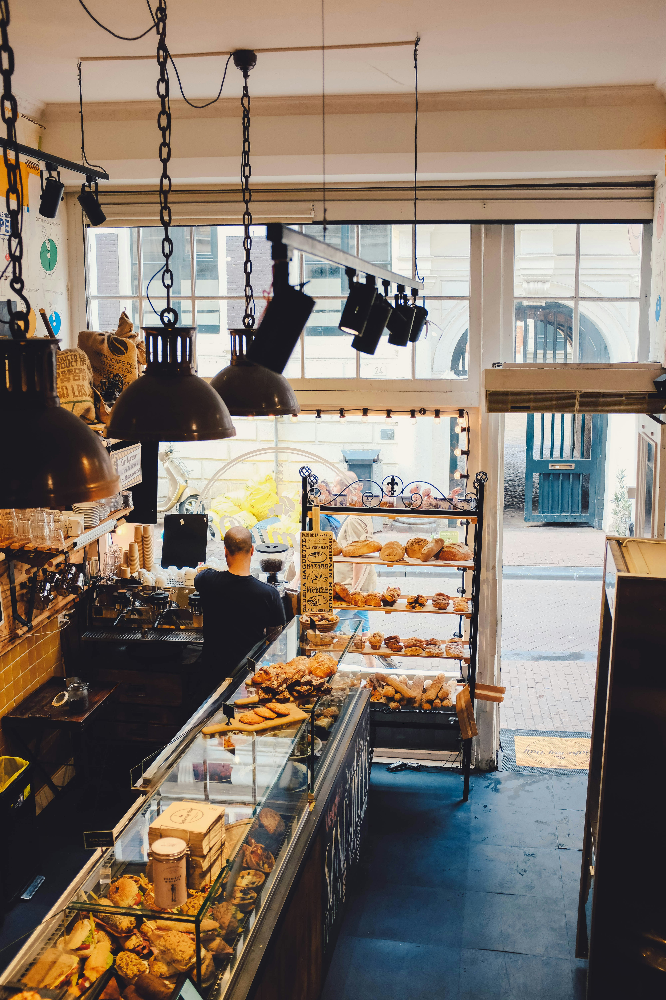
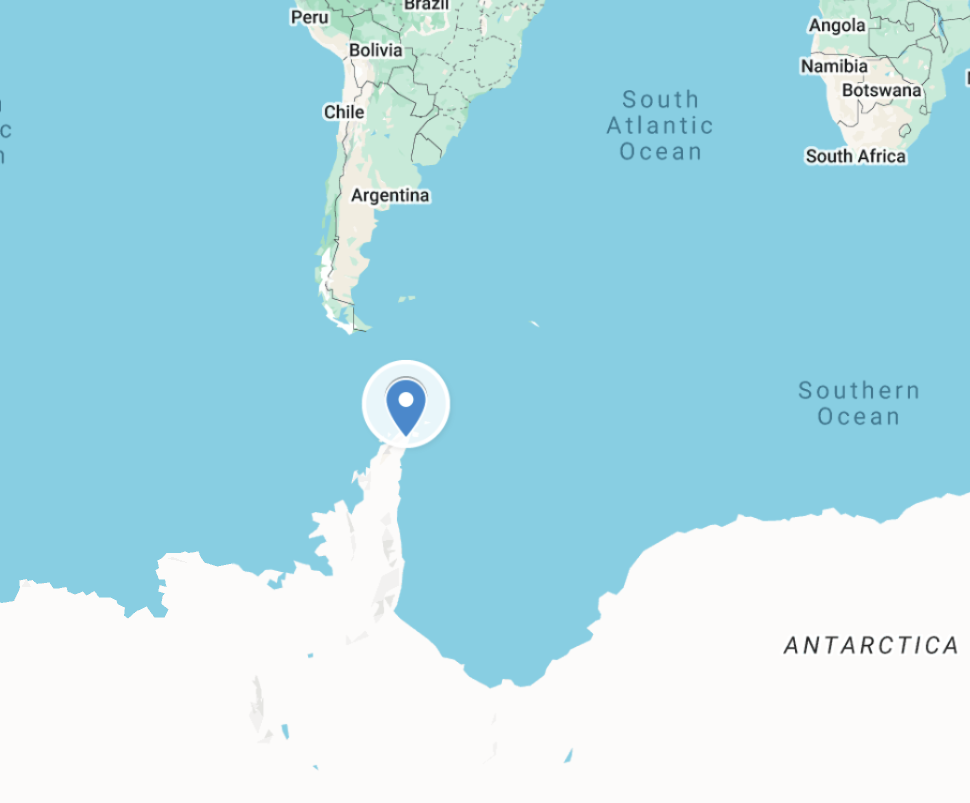

About Us

Catata Café is your new local coffee and pastry shop created in 2025. We bring to you a cup of coffee and our cats to warm up your day. We take pride in our new styled donuts, freshly baked every day with our ripe delicatly plated fruits and flowers. Our Polish and Italian style cafe brings a fresh sense of a new fashionable cuisine.
Top quaility drinks, donuts, pasteries, cookies, and cakes can be found here
in the heart of the ocean. Nominated top 20 Café's in Vancouver this year by Forbes. Whether you're sailing by or diving in, every bite
is a voyage into old-world flavor and oceanic charm. Come dine in with our cats!
We'd love to see you soon,
Café Catata


| Hours Open | |
|---|---|
| Sunday | CLOSED |
| Monday | 8:00 AM - 10:00 PM |
| Tuesday | 8:00 AM - 10:00 PM |
| Wednesday | 8:00 AM - 10:00 PM |
| Thursday | 8:00 AM - 10:00 PM |
| Friday | 8:00 AM - 10:00 PM |
| Saturday | 8:00 AM - 10:00 PM |
| Holidays | 9:30 AM - 5:00 PM |